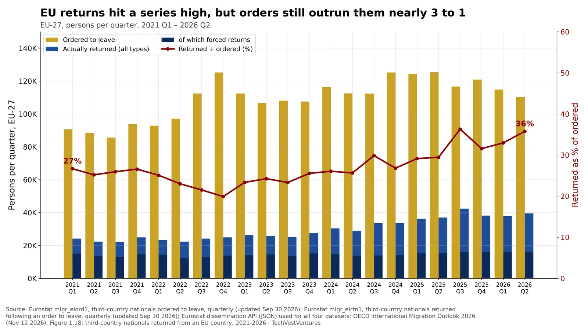
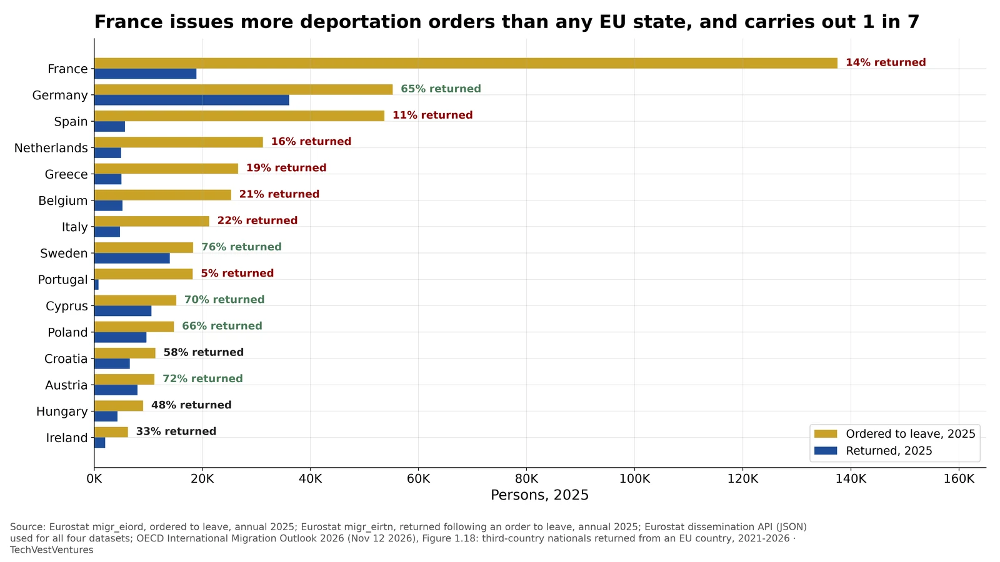

Q12. EU Returns

Quarterly Eurostat counts for the EU-27: non-EU citizens ordered to leave (gold) against those actually returned after such an order (blue, darker = forced returns), 2021-Q1 to 2026-Q2. Returns rose from 24,180 in 2021-Q1 to 39,445 in 2026-Q2 (+63%), with a record 42,340 in 2025-Q3. In the four quarters to 2026-Q2, 157,765 people were returned, +13% on the previous four quarters, while 462,710 orders were issued. The returned-to-ordered ratio climbed from 27% to 36%. Forced returns have barely moved (15,030 → 16,190 a quarter); the growth came from assisted and unassisted voluntary departures.
- Orders to leave peaked at 125,375 in 2025-Q2 and were 110,335 in 2026-Q2 (-12% from the peak).
- Forced returns in 2026-Q2: 16,190 (41% of all returns).
- Policy context this week: the EU and Nigeria concluded talks on a readmission agreement (X post: https://x.com/beyondB_DAG/status/2120584800834666603); the deal is reported at about €100 million. In Italy, organizers of a 'remigration' citizens' bill rallied on Nov 14 saying more than 150,000 people signed it (https://x.com/RyanAFournier/status/2121717685092511876). Neither changes the data through June 2026.
- The OECD's International Migration Outlook 2026 (Nov 12) says EU returns doubled between 2021 and 2025 and have been 'roughly stable since Q3 2025, at around 35,000 per quarter' (its Figure 1.18, a narrower series than the total shown here).
Note: The ratio of returns to orders is a rough gauge, not a cohort rate: people returned in a quarter may have been ordered to leave in earlier quarters, and one person can receive more than one order. Eurostat rounds counts to the nearest 5. Some voluntary-return subtotals are confidential or missing for some quarters; totals are used in the ratio. Eurostat's quarterly series begins in 2021 for the EU-27 aggregate.
Sources: Eurostat migr_eiord1, third-country nationals ordered to leave, quarterly (updated Sep 30 2026) Eurostat migr_eirtn1, third-country nationals returned following an order to leave, quarterly (updated Sep 30 2026) Eurostat dissemination API (JSON) used for all four datasets OECD International Migration Outlook 2026 (Nov 12 2026), Figure 1.18: third-country nationals returned from an EU country, 2021-2026

Non-EU citizens ordered to leave and returned in 2025, for the 15 EU member states issuing the most orders (Eurostat annual data, published Sep 2026). EU-wide, 486,705 people were ordered to leave and 156,000 were returned (32%). France alone issued 137,550 orders — 28% of the EU total — but returned 18,930 (14%). Germany issued far fewer orders (55,240) and returned more people (36,075, 65%). Spain (11%) and Portugal (5%) returned the smallest shares among the large issuers; Sweden (76%), Austria (72%) and Cyprus (70%) the largest.
- France's 118,620 gap between orders and returns in 2025 is larger than the total number of orders issued by any other member state.
- Germany returned about 1.9 times as many people as France while issuing 2.5 times fewer orders.
- Low ratios can reflect policy (France issues an order — the OQTF — almost automatically after refusals), not only enforcement failure; high ratios can reflect fewer, better-targeted orders.
- The OECD's International Migration Outlook 2026 (Nov 12) puts EU returns at 139,000 in 2025, double 2021; the Eurostat 'all destinations' total used here is higher, so the OECD figure likely counts a narrower set of returns (for example, only returns to non-EU countries).
Note: Returns are counted by the member state carrying them out and include voluntary departures that were verified; people returned in 2025 may have been ordered to leave in earlier years. Eurostat rounds to the nearest 5. Switzerland (an associated Schengen state) is excluded.
Sources: Eurostat migr_eiord, ordered to leave, annual 2025 Eurostat migr_eirtn, returned following an order to leave, annual 2025 Eurostat dissemination API (JSON) used for all four datasets OECD International Migration Outlook 2026 (Nov 12 2026), Figure 1.18: third-country nationals returned from an EU country, 2021-2026